suppressPackageStartupMessages( {
library( Seurat )
library( Matrix )
library( sparseMatrixStats )
library( tidyverse ) } )
count_matrix <- Read10X( "data/pbmc3k/filtered_gene_bc_matrices/hg19/" )Principal Component Analysis
Load example data
Log-normalize
fractions <- t( t(count_matrix) / colSums(count_matrix) )
expr <- log1p( fractions * 1e4 )Highly variable genes:
hvg <- names( head( sort( rowVars(fractions) / rowMeans(fractions), decreasing=TRUE ), 1000 ) )As a preparation for PCA, subset expression to HVGs, then center:
expr_centered <- as.matrix( expr[hvg,] - rowMeans( expr[hvg,] ) )Centering means that all genes now have mean 0:
rowMeans( expr_centered ) %>% head() PPBP FCRL2 CEP128 DOK3 ARVCF
-8.115936e-18 5.247860e-18 -1.151342e-18 4.476872e-18 -1.214306e-19
YPEL2
-7.072532e-18 Optionally, we can also standardize the genes (i.e., divide by the standard deviation) so that they all have the same chance to influence the PCA. This point is optional in the sense that it is not required for the validity of the points we make below.
expr_centered / rowSds( expr_centered ) -> expr_stddThe centered expression matrix is what we supply to the PCA:
pca <- irlba::prcomp_irlba( t( expr_stdd ), 20, scale.=FALSE, center=FALSE )
rownames(pca$x) <- colnames(expr_stdd)
rownames(pca$rotation) <- rownames(expr_stdd)To remind us what the PCA does, let’s check that the PC score matrix \(X\) (pca$x) can relly be obtained from the expression matrix \(Y\) (t(expr_stdd)) via the loadings matrix \(R\) (pca$rotation): \(YR=X\)
( t(expr_stdd) %*% pca$rotation )[1:5,1:5] PC1 PC2 PC3 PC4 PC5
AAACATACAACCAC-1 4.4561722 -0.5435771 -0.18664296 -2.4192526 -0.1511151
AAACATTGAGCTAC-1 0.8250185 -2.3765237 -4.00707855 6.8221179 2.6804905
AAACATTGATCAGC-1 2.3312564 1.3021276 2.35138861 -2.1671548 3.3980910
AAACCGTGCTTCCG-1 -10.5114431 -2.0959988 0.09797461 0.2043448 0.3759040
AAACCGTGTATGCG-1 -1.6880213 4.8213875 6.75849700 4.1443049 -5.9821060pca$x[1:5,1:5] PC1 PC2 PC3 PC4 PC5
AAACATACAACCAC-1 4.4561722 -0.5435771 -0.18664296 -2.4192526 -0.1511151
AAACATTGAGCTAC-1 0.8250185 -2.3765237 -4.00707855 6.8221179 2.6804905
AAACATTGATCAGC-1 2.3312564 1.3021276 2.35138861 -2.1671548 3.3980910
AAACCGTGCTTCCG-1 -10.5114431 -2.0959988 0.09797461 0.2043448 0.3759040
AAACCGTGTATGCG-1 -1.6880213 4.8213875 6.75849700 4.1443049 -5.9821060If we rotate in the other direction, we can reconstruct the expression matrix: \(\hat Y=XR^\top\)
t( ( pca$x %*% t(pca$rotation) ) )[1:5, 1:5 ] AAACATACAACCAC-1 AAACATTGAGCTAC-1 AAACATTGATCAGC-1 AAACCGTGCTTCCG-1
PPBP -0.000248572 -0.1202714 -0.06298759 0.17825671
FCRL2 -0.109228782 1.2709143 -0.09810687 -0.19770283
CEP128 0.048696357 0.1927259 -0.01868288 -0.05539346
DOK3 -0.305141723 0.1725313 -0.09067840 0.52249741
ARVCF -0.192703935 -0.2391313 0.14135028 -0.26067403
AAACCGTGTATGCG-1
PPBP 0.05362323
FCRL2 0.07637500
CEP128 -0.04277980
DOK3 -0.02862818
ARVCF 0.20481912expr_stdd[1:5,1:5] AAACATACAACCAC-1 AAACATTGAGCTAC-1 AAACATTGATCAGC-1 AAACCGTGCTTCCG-1
PPBP -0.14298358 -0.14298358 -0.14298358 2.91652450
FCRL2 -0.12311737 3.95087439 -0.12311737 -0.12311737
CEP128 -0.05661789 -0.05661789 -0.05661789 -0.05661789
DOK3 -0.15956960 -0.15956960 -0.15956960 -0.15956960
ARVCF -0.03920291 -0.03920291 -0.03920291 -0.03920291
AAACCGTGTATGCG-1
PPBP -0.14298358
FCRL2 -0.12311737
CEP128 -0.05661789
DOK3 -0.15956960
ARVCF -0.03920291This reconstruction is, unsurprisingly, quite imperfect. After all, we truncated \(R\) to only 20 PCs.
Let’s compare epxression and reconstruction for a random cell:
cell <- 123
plot( expr_centered[,cell], ( pca$x %*% t(pca$rotation) )[cell,], asp=1 )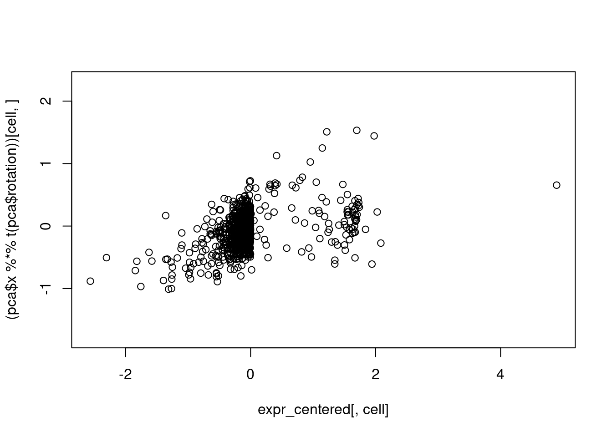
Could be better. But let’s undo standardization and centering:
plot(
expr[hvg,cell],
( pca$x %*% t(pca$rotation) )[cell,] * rowSds( expr_centered ) + rowMeans( expr[hvg,] ),
asp=1 )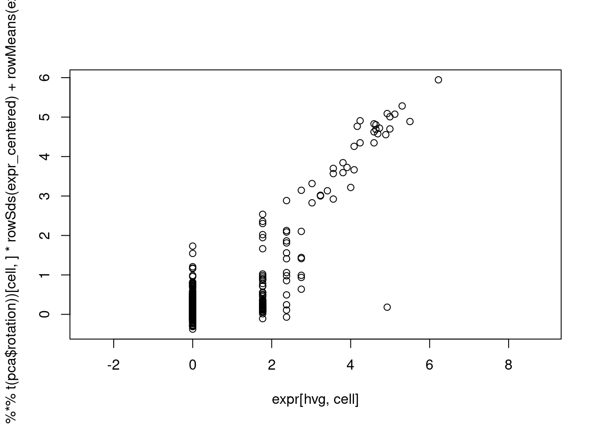
Much better…
Still, the preceding plot is actually the best one can get in some sense, and this is the reason we use the PCA.
Maybe, we should make a plot, comparing one gene over all cells
gene <- hvg[1]
plot(
ifelse( expr[gene,]>0, expr[gene,], runif( ncol(expr), -.3, 0 ) ),
( pca$x %*% t(pca$rotation) )[,gene], main=gene, cex=.3 )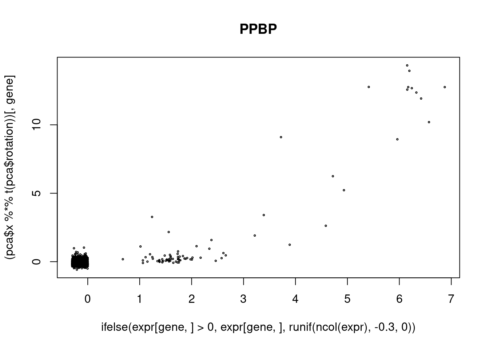
Power methods
Above, we had called
pca <- irlba::prcomp_irlba( t( expr_stdd ), 20 )to ask the IRLBA package to perform a PCA on t(expr_stdd).
A PCA on a matrix \(Y\) is performed by getting the eigenvectors of \(Y^\top Y\):
yty <- expr_stdd[hvg,] %*% t(expr_stdd[hvg,])
eig <- irlba::partial_eigen( yty, n=20 )
str(eig)List of 2
$ vectors: num [1:1000, 1:20] 0.03929 -0.00701 -0.00527 0.0286 -0.00111 ...
$ values : num [1:20] 94450 50384 41570 28163 17629 ...The eigenvectors make up the rotation matrix. To check, let’s compare one column of the rotation matrix (say, the 3rd) with the corresponding eigenvector.
plot( pca$rotation[,3], eig$vectors[,3], asp=1 )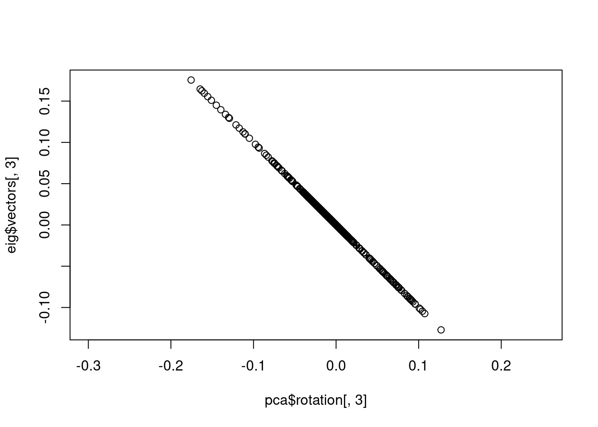
The irlba function did not compute a full eigendecomposition but only calculated the first 20 eigenvectors. How can such a partial eigendecomposition be done?
Most algorithms for partial eigendecompositions are refinements of a basic idea, the power method. The power method itself tends to not be very numerically stable, which is why much more stable variants have been developed. The irlba package, for example, used Baglama and Reichel’s “augmented implictly restarted Lanczoc bidiagonalization algroithm” (IRLBA).
Instead of going into the depth of IRLBA and related approaches, we will only demonstrate the simple power method in the folloing.
Let’s assume, the eigenvectors of our matrix \(M=Y^\top Y\) were \(\mathbf{r}_l\) with eigenvalues \(\lambda_l\), i.e., \(M\mathbf{r}_l=\lambda_l\).
We start with a random vector \(\mathbf{v}\). If we already knew the eigendecomposition of \(M\), we could use it as basis to expand \(\mathbf{v}\) in it: \(\mathbf{v}=\sum_l v_l \mathbf{r}_l\).
Applying \(M\) gives \(m\mathbf{v}=\sum_l \lambda_l v_l \mathbf{r}_l\) and applying \(M\) \(n\) times yields \[ M^n\mathbf{v}=\sum_l \lambda_l^nv_l\mathbf{r}_l\] As \(\lambda_1\) is the largest eigenvalue, the first component of \(M^n\mathbf{v}\) will grow faster with \(n\) than the other components, and with increasing \(n\), the vector \(M^n\mathbf{v}\) will become more and more collinear with the first eigenvector.
We try this by starting with a random vector, and applying the matrix 5 times. To avoid numerical overflow, we normalize the vector to unit length after each operation. Then, we compare the vector with the actual first eigenvector (as calculated by irlba) with a scatter plot.
v <- rnorm( length(hvg) )
for( i in 1:10 ) {
v <- as.vector( yty %*% v )
v <- v / sqrt(sum(v^2))
plot( pca$rotation[,"PC1"], v, asp=1, pch="." )
}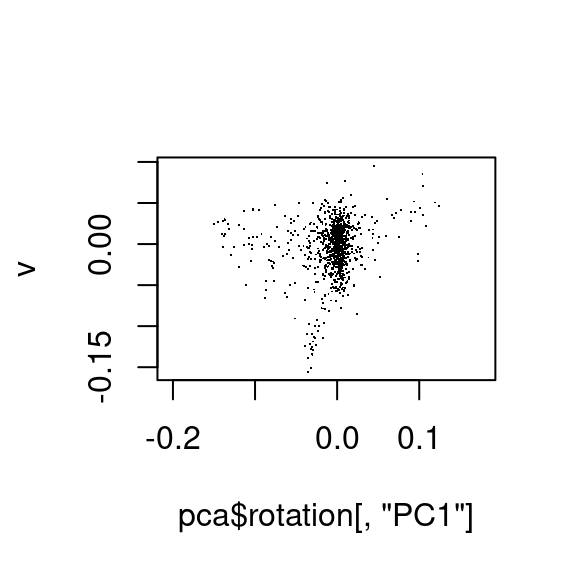
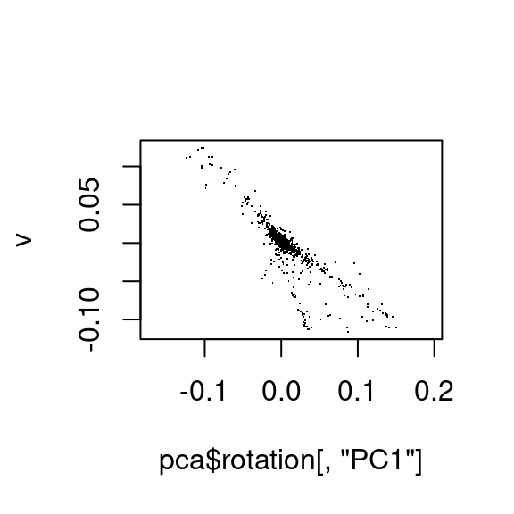
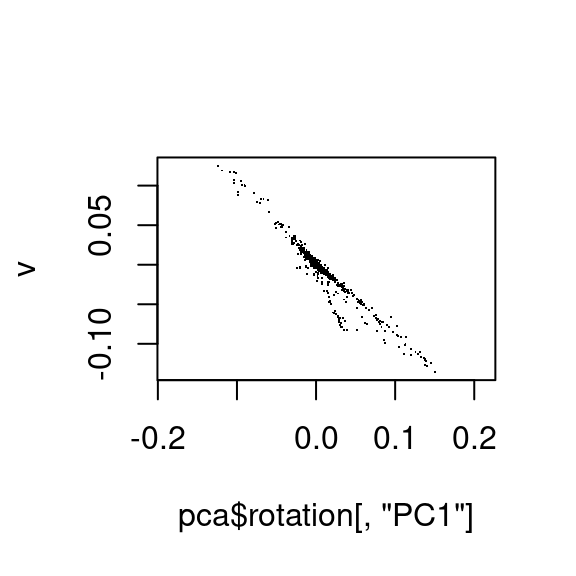

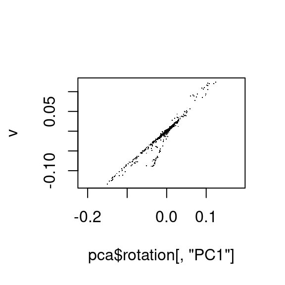
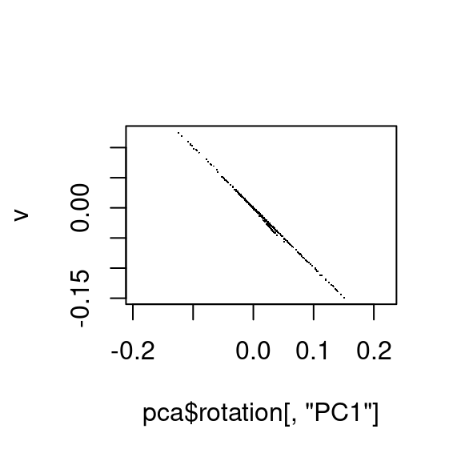
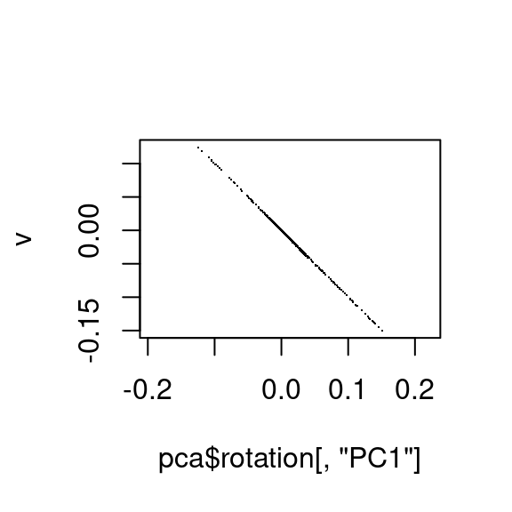
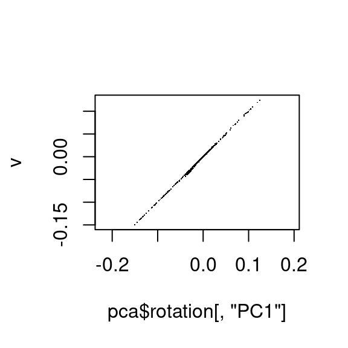
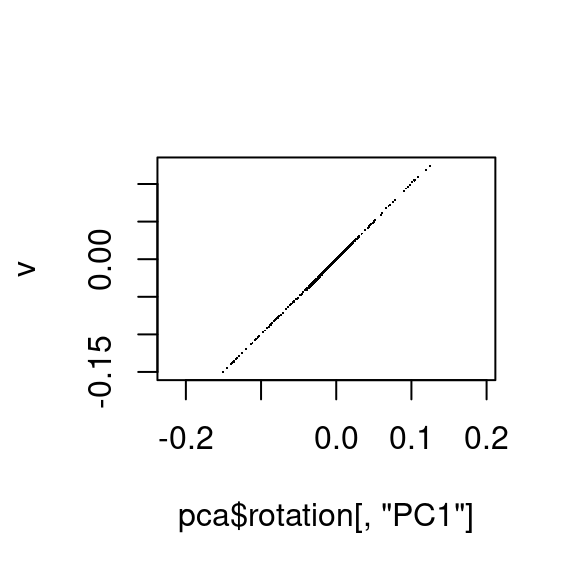
v1 <- vTo get the second eigenvector, we do the same as before, but after each operation we subtract the vector’s projection onto the first eigenvector.
v <- rnorm( length(hvg) )
for( i in 1:10 ) {
v <- as.vector( yty %*% v )
v <- v - v1 * sum( v1 * v )
v <- v / sqrt(sum(v^2))
plot( pca$rotation[,"PC2"], v, asp=1 )
}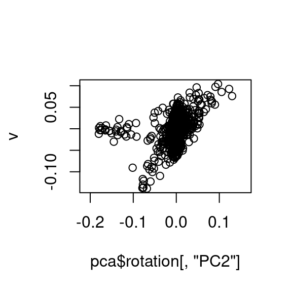
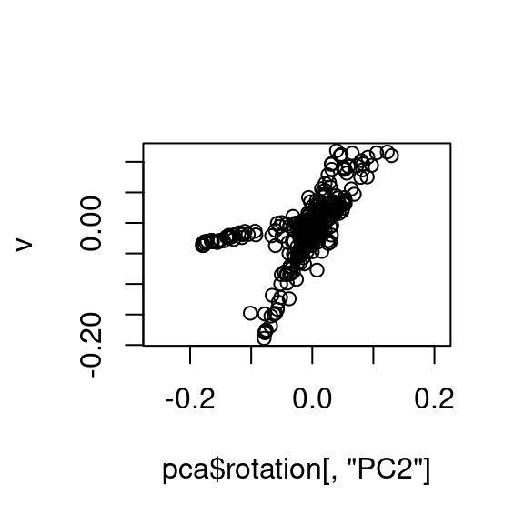
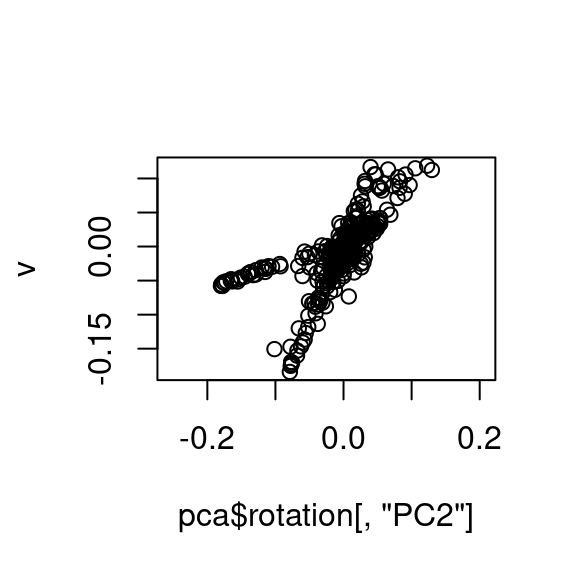
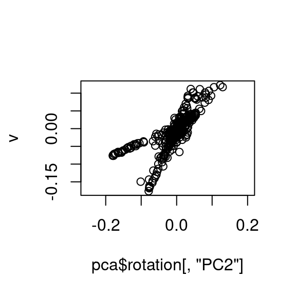
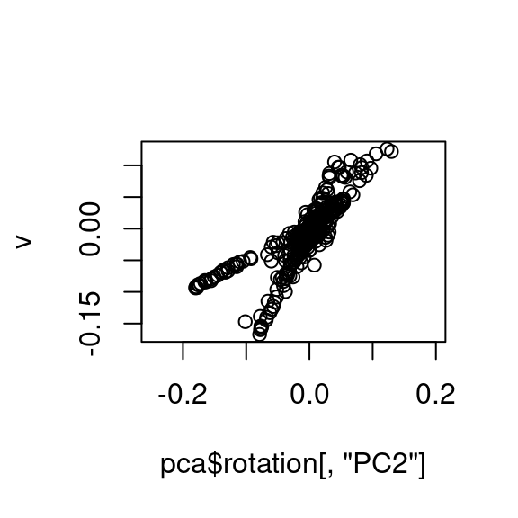
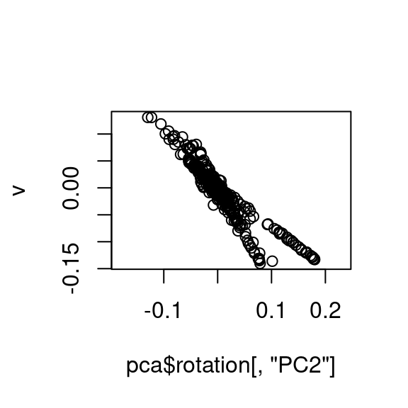
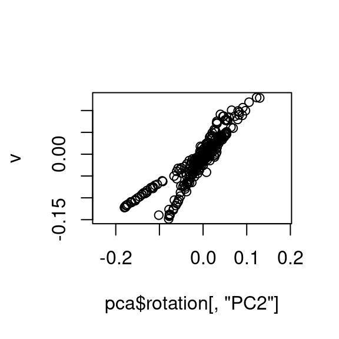
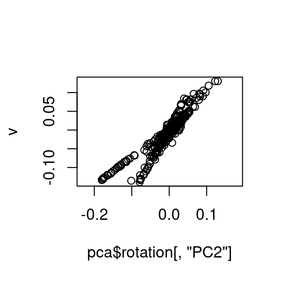
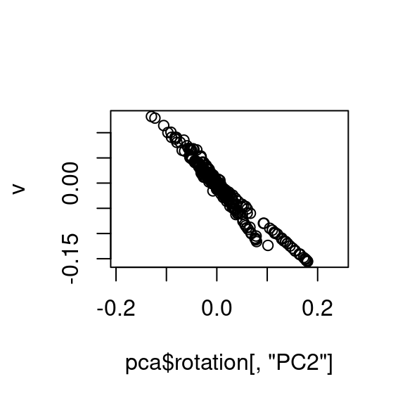
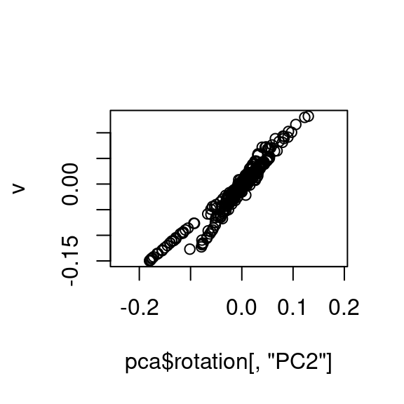
v2 <- vBy projecting out the first two eigenvectors, we can get the third eigenvector:
v <- rnorm( length(hvg) )
for( i in 1:10 ) {
v <- as.vector( yty %*% v )
v <- v - v1 * sum( v1 * v )
v <- v - v2 * sum( v2 * v )
v <- v / sqrt(sum(v^2))
plot( pca$rotation[,"PC3"], v, asp=1 )
}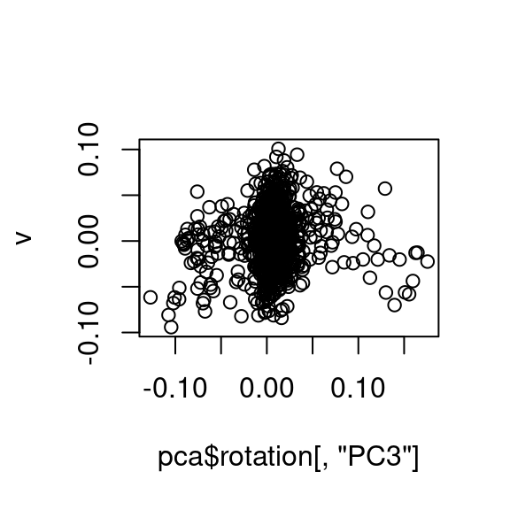
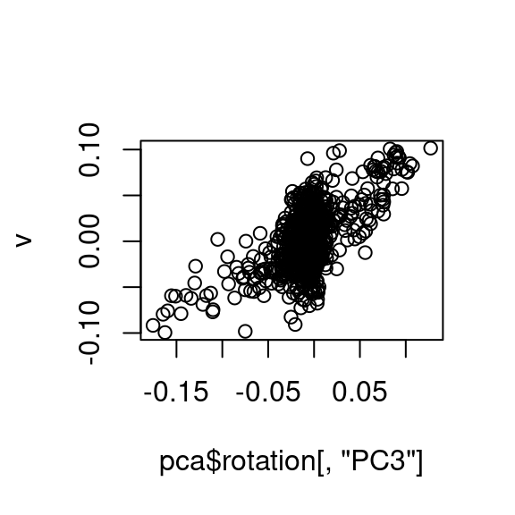
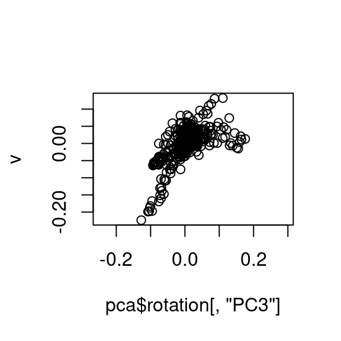
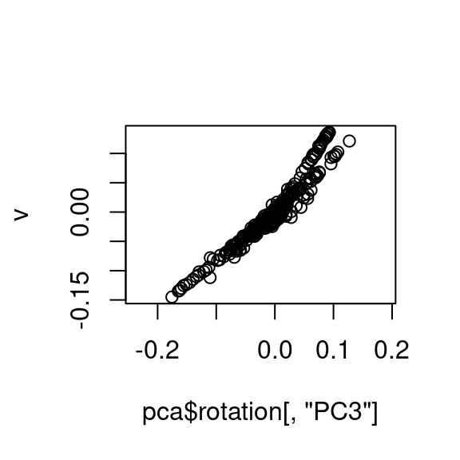
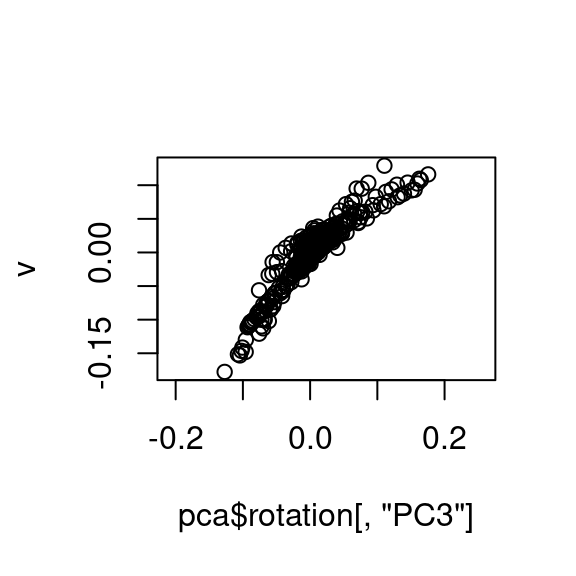
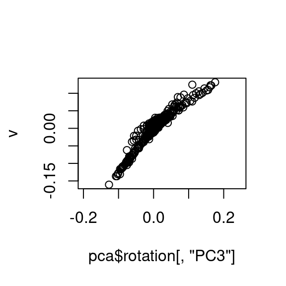
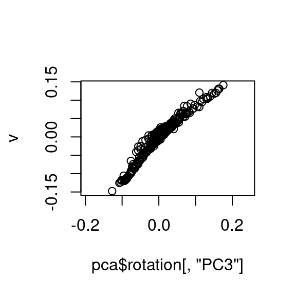
As states, this simple method tends to become numerically unstable quickly. However, most partial eigendecomposition algorithms actually used build onto this basic idea.